IO: Imaginary Ones Imaginary Ones 是一个令人愉快的 3D 动画艺术，包含 8888 个独特的 NFT。 Imaginary Ones 希望重新点燃您的火花，拥抱创造力并为您的梦想而努力。 欢迎来到想象世界，那里没有太疯
IOI-game 将有限的汽车作为 NFT 进行质押 - 玩家对玩家的游戏 - 10,000 TRX 保证奖池 - 即时奖励的冒险和锦标赛 - IOI 代币持有者的奖励池 - 为交易者和投资者提供的强大 NITRO 钱包 -
IOT APE IOT Ape 是新 IoTeX 链上的自动做市商和收益农场。 IOTX 是一种以太坊代币，为 IoTeX 提供动力，IoTeX 是一个旨在连接物联网设备（如相机和传感器）和去中心化应用程
IoTeX Galaxy IoTeX Galaxy 是 IoTeX 链上的一款挖矿游戏。 您可以购买将入侵行星的宇宙飞船为您无限期地开采 IOTX，初始每日回报率为 12%。 游戏的原则是通过让您的舰队在适当
IoTeX PUNKS IoTex PUNKS 是专为 IOTX 区块链设计的艺术像素集合！ 该系列由 10,000 个独特的 PUNKS 组成，只能通过随机过程铸造！ 每个 IOTX PUNK 都是独一无二的，设计有超过 100 种不同的属性和特征
Minto Minto 是一个用于挖掘 BTC 的独特 DeFi 平台。Minto (BTCMT) 代币由 100 BTCMT = 1 TH/s 比率的真实采矿设备哈希率支持。Minto 允许用户通过质押 BTCMT 代币获得每日比特币收入
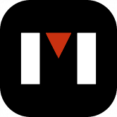 Mintverse Mintverse 是一个综合性的 NFT 聚合器和市场，用户可以在其中轻松创建、发现和收集一系列数字收藏品、游戏 NFT 等。 最初，它支持 BSC 和 ETH，最终将扩展到其他二层解
Minty.art Minty 正在重新构想艺术赞助。Minty 是一个使用区块链技术、去中心化金融 (Defi) 和不可替代代币 (NFT) 支持艺术品融资和交易的软件平台。 Minty 赋予艺术家权力，让他
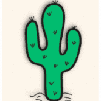 Mirage Market Mirage 试图在 Oasis 内建立一个多样化的生态系统 Mirage 代币是 Mirage 生态系统的门户。Mirage 计划在 Oasis 生态系统的所有领域构建、创造、扩展产品并蓬勃发展。生态系统
Mirror Mirror 是一种 DeFi 协议，由 Terra 网络上的智能合约提供支持，可以创建称为镜像资产 (mAssets) 的合成资产。mAssets 模仿现实世界资产的价格行为，让世界任何地方的交
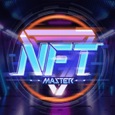 NFT Master NFT Master 是一个聚合器，链接 NEXTYPE 生态系统中各种游戏的 NFT 资产。玩家可以在游戏中查看自己持有的 NFT 并与其他玩家自由交易，还可以公开拍卖稀有的 NFT。同时 NEXTYPE
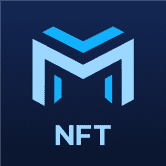 NFT Multisender 在一次交易中将 ERC721 和 ERC1155(NFT) 代币发送到数千个地址。批量传输erc721 & erc1155。现在支持的网络：BSC & ETH & xDAI & Polygon & IoTex & Arbitrum & Optimism
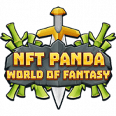 NFT Panda: World of Fantasy NFT Panda: World of Fantasy是一个熊猫幻想英雄为他们的土地自由而生活和战斗的世界。你的任务是成为一个英雄，他将重新统一埃尔加德的土地，并将他们带回
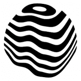 NFT Showroom NFT Showroom 是一个基于 Hive 区块链的数字艺术市场。Hive 是一个快速且无感觉的区块链，可扩展，可在全球范围内访问，并解锁艺术之外的整个生态系统。我们的目
NFT Sprites NFT Sprites 是 AI 生成的人变成了 NFT（非同质代币），您可以在以太坊区块链上买卖。这个游戏中没有一个人是真实的——他们是 100% 由最先进的人工智能生成的。通
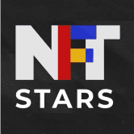 NFT STARS NFT STARS 是一个以新兴 NFT 市场为中心的独特数字艺术市场。NFT STARS 提供了一套独特的技术解决方案，使艺术家和艺术收藏家可以轻松访问 NFT 市场。 NFT STARS 代表着艺术
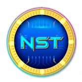 NFT-Starter NFT-Starter (NST) 起源于 NFT 启动板平台的先驱，并成为 Crypto 中具有各种时尚功能的时尚设定者。 执行这一愿景的计划首先是与 IDO 启动板一起创建享有盛誉的实时高吞吐量体验，
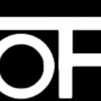 nitro invest 利率 每次合约余额增加 500.000,00 trx 时，您的每日投资回报率就会增加 0.05%，此红利会提高直到达到 5% 2 % forever trx 智能合约计算利润，直至自存入之日起的每笔存款
NoahArkDAO NoahArkDAO 旨在为具有稳定币和流动性证明的 Game-Fi 加密货币提供支持资产。流动性对所有 GameFi 开发人员都很重要。 以马厩币作为支持资产，GameFi 币变得更加稳定，并
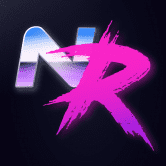 Node Runners 获取英雄 赌注 英雄 与恶棍战斗并赌注他们！ 如果您将 MEME 与 CORE 混合并添加 2074 种口味，您将获得 Node Runners — 一款以赛博朋克为主题的可收藏纸牌游戏。 质押流动性以获得
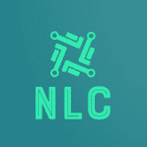 Nolossclub NO LOSS CLUB 是一个开源的基于加密的 NFT 乐透平台。所有 NFT 持有者都有公平的获胜机会，而不会冒着存款风险。奖金由对俱乐部所有价格的兴趣组成。 NOLOSCLUB 是一种基于 DEFI
Nominex / Nomiswap (NMX) Nomiswap/Nominex 的主要功能 Nomiswap得到了广泛认可的Nominex中心化交易所的支持。这两个平台彼此深度集成。 能够以 0% 的费用进行交易——这要归功于实
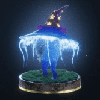 Non-Fungible Fungi Genesis Non-Fungible Fungi 集体是一个由 10,100 个独特的 3D 动画（和魔法）蘑菇 NFT 组成的王国，它们在以太坊区块链中漫步。每个蘑菇都属于 3 种中的 1 种，魔法、沼泽和沼泽标准，其中
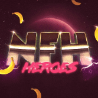 Non-Fungible Heroes @BoringBananasCo 的社区主导项目拥有 3 个无聊的香蕉 NFT，可免费铸造一个 NFH！ Non-Fungible Heroes 是 BBCo 团队为您带来的 NFT 系列，用于教育、娱乐和启发。通过社区参与产生的创意宇
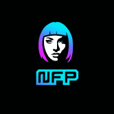 Non-Fungible People Daz 3D 的首个 NFT 合集 Non-Fungible People (NFP) 是 8,888 个超现实 PFP 的合集是由数千个独特特征生成的 8,888 个超现实 PFP 的集合，并以惊人的 3D 呈现。 Daz 3D是 NFT 战略、营销和全栈开发（包括
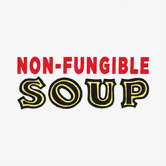 Non-Fungible Soup Non-Fungible Soup 是 2048 个受 Warhol 启发的生成向量 NFT 的集合。对沃霍尔调色板和臭名昭著的作品“汤罐”的高保真调查。 Non-Fungible Soup 是Art101受 Warhol 启发的 NFT PFP 项目。随机铸造 2,048 种
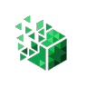 NonFungiblePixels 基于 NFT 的广告/广告牌平台。以 NFT 形式买卖像素，并根据需要按图像覆盖像素，并链接您的 URL。 我们很高兴地宣布关于雪崩生态系统的 NFT 项目。该项目旨在
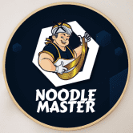 Noodle Master 什么是面条大师？ Noodle Master 是一个在 Cronos 网络上实施的项目。由于采用了先进的解决方案，您不可逆转的受阻投资的每日回报将达到每天 9% 的水平。 该团队创建了自己
NOODLE.Finance 为什么是面条？ $NOODLE 将成为最成功的 DeFi 农业代币！做你自己的面条🍜 面条比寿司和泡菜好得多。- 在接下来的三个月里，每 172800 个区块（大约 30 天）奖励将减半。第
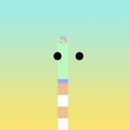 Noodles Noodles是 NFT 收集的 5,555 条面条，是对 Doodles 和方便面的滑稽诠释和混搭。作为第一个通过 Doodlebank获得官方批准的 Doodles 衍生产品，我们的社区致力
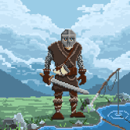 Northern Guilds 创造历史。拯救人类。统治米德加德。 Northern Guilds 是一款有趣的、与设备无关的地牢爬行者区块链 MMORPG，其灵感来自您最喜欢的童年游戏。在怀旧冒险游戏的
Oly Sport 什么是 奥利运动？ Oly Sport 开启了 NFT 赛马时代——一个在线赛马游戏平台，使用不可替代代币 (NFT) 作为游戏内资产，并使用区块链支持的代币作为货币。Oly Sport 是一
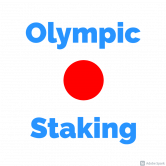 OlympicStaking 什么是 OlympicStaking ？ 基于区块链的奥运赌注。 您可以通过简单的规则投注您的国家或最喜欢的运动员。 一切都是公平和透明的。 欢迎您以明智的判断进行质押，赚取丰厚
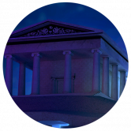 Olympus Finance 什么是 奥林巴斯金融？ Olympus Finance 的灵感来自之前的算法稳定协议，例如 Tomb Finance。就像 2OMB Finance 一样，我们的协议使用三种代币（HERMES、ARES、P